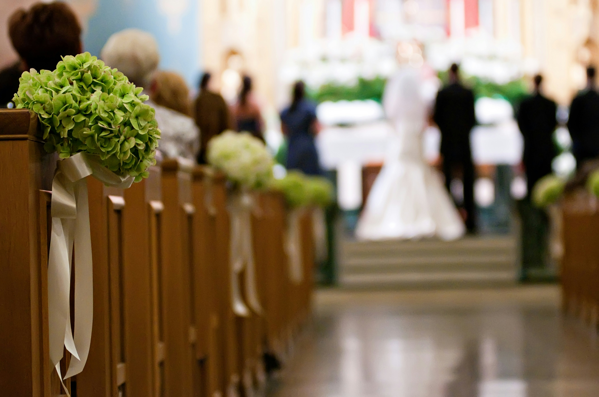
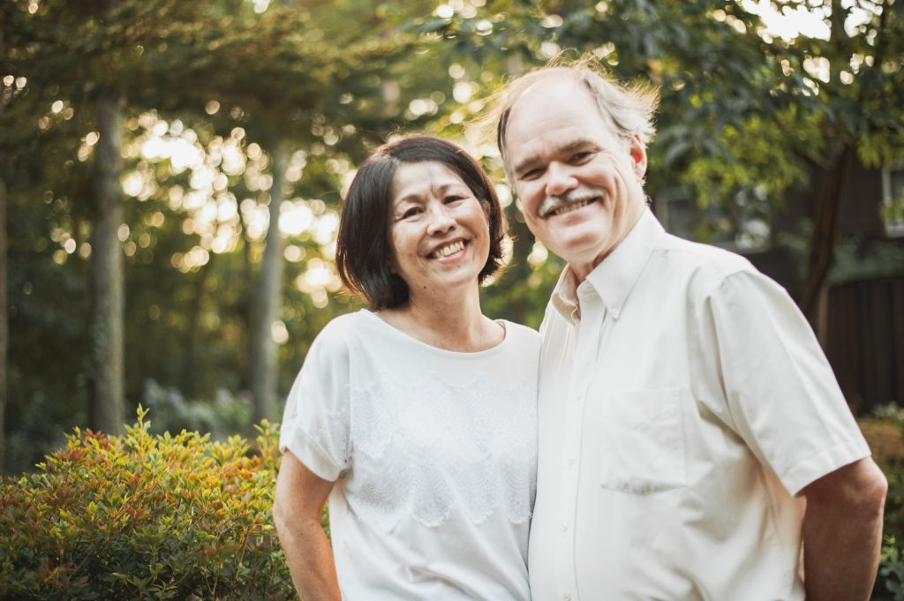

心にしみる本物の拳式を頼む方に
30年ほど前からキリスト教会結婚式が主流になり、全国各地にウエディングチャペルが設立されました。競い合うように各地場は、チャペルのデザインや拳式の内容などを次々と新しくし、見栄えの優れた結婚式を作り上げてきました。その一方一番大事なところがおろそかになる傾向があります。それは、神の前で誓いを立てさせて、祝福の祈りをする教師の事です。数をこなすことに重要視する会場は、人選を軽視し、牧師の資格がない人を雇うことさえもあります。一回きりの大事な結婚式ならば、経験豊かな本物の牧師に司式してもらいたいと思わないでしょうか。それならば、ハートフルウエディングのドウゲン牧師に頼んでみるのは、いかがでしょうか？
プロフィール
Jon Dugan | ジョン・ドウゲン

- 1983年 アメリカの聖書神学を卒業
- 1985年 宣教師として来日
- 1987年 大阪府河内長野市で教会を開拓
- 2002年 関西聖書学院の教師を務め
- 2009年（宗）ジャパン・ベサニー・ミッション代表
- 2020年 奈良ニューライフキリスト教会を開拓
- 50会場以上で多くの結婚式を司式した経験豊富な牧師
サービスについて

拳式の場所
- ウエディングチャペル（持ち込み牧師承諾要）
- レストラン、公園、居宅など。お二人のご要望に応えるため多数の選択肢があります
費用：￥５０，０００
事前カウンセリング2回、当日の式料、交通費（関西圏内）
- 関西以外のところで、交通費の自費を頂きます
- 音楽や写真などのオプションはご相談可能